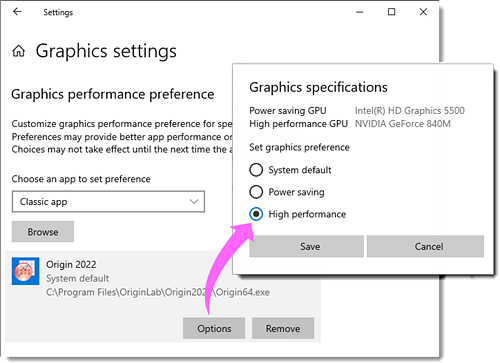
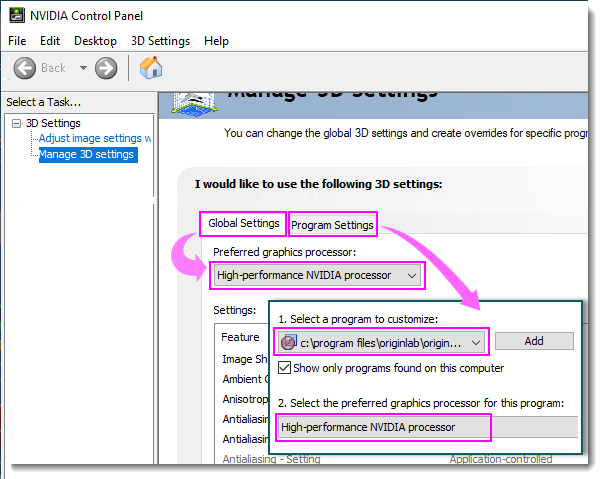

FAQ-906 Was soll ich tun, wenn mein Origin langsam oder träge wird?
Origin-slow-Troubleshoot
Letztes Update: 23.08.2022
Schritt 1 Prüfen Sie, ob die Langsamkeit bei einem bestimmten Projekt auftritt oder ein allgemeines Problem ist.
Führen Sie die gleichen Schritte, die die Verlangsamung verursachen, mit einer neuen Projektdatei mit sehr einfachen Daten durch. Prüfen Sie, ob Origin langsam ist.
Wenn das Problem nur mit einem bestimmten Projekt auftritt, konsultieren Sie diese Seite, um eine Lösung zu finden.
Sollte das Problem auch bei einem neuen Projekt auftreten, fahren Sie mit den untenstehenden Schritten fort.
Schritt 2 Prüfen Sie, ob Windows das Windows 10 Fall Creators Update, 2017, angewendet hat.
Wenn Sie Origin auf Windows 10 ausführen und das Windows 10 Fall Creators Update, 2017 (Version 1709) angewendet haben, kann Origin eventuell langsam werden oder sogar gar nicht mehr reagieren, während Sie bestimmte Operationen durchführen (z. B. Öffnen des Menüs Zeichnen). Das Problem ist nicht auf Origin beschränkt und wurde auch für Windows-Operationen berichtet (z. B. Minimieren oder Maximieren eines Explorer-Fensters).
Microsoft hat nach dem Windows 10 Fall Creators Update weitere Updates herausgegeben. Das Anwenden dieser Updates löst das Problem der Langsamkeit möglicherweise.
- Gehen Sie zu Windows Update und wenden Sie alle verfügbaren Updates an.
Sollte dies nicht der Fall bei Ihnen sein, fahren Sie mit den untenstehenden Schritten fort.
Schritt 3 Prüfen Sie, ob das Problem durch den sogenannten Balanced Power Plan des Laptops verursacht wird.
Wenn Sie Origin auf einem Laptop ausführen und der Energiesparmodus aktiviert ist, werden einige Anwendungen, einschließlich Origin, langsam, wenn der Akku des Computer nicht mehr gut geladen ist. Verbinden Sie Ihren Laptop, um ihn zu laden, und testen Sie Origin erneut. Prüfen Sie, ob Origin wieder schneller ist.
- Lassen Sie Ihren Laptop weiterhin angeschlossen.
ODER
- Schalten Sie den Energiesparmodus aus. Die Einstellung variiert etwas zwischen den verschiedenen Betriebssystemen. Bei Windows 10 zum Beispiel:
-
- Windows Startmenü > Einstellungen > System > Akku.
- Deaktivieren Sie die Funktion Stromsparmodus automatisch aktivieren bei.
Sollte dies nicht der Fall bei Ihnen sein, versuchen Sie es mit dem nächsten Abschnitt.
Schritte, die die Performance eventuell verbessern
1. Origin auf lokalem PC installieren und höhere Priorität für Origin festlegen
Höhere Priorität für Origin festlegen:
- Gehen Sie im Windows-Dialog Task-Manager zur Registerkarte Details.
- Suchen Sie "Origin64.exe", klicken Sie mit der rechten Maustaste auf die Datei und wählen Sie Priorität festlegen: Hoch.
2. Anwenderdateiordner auf lokalen PC zurücksetzen
- Führen Sie das Skript unten im Skriptfenster aus, um den Wert des Anwenderdateiordnerpfads in der Registry zu löschen. Danach können Sie den Anwenderdateiordner zurücksetzen, wenn Sie Origin das nächste Mal starten.
-
del –path
- Schließen Sie Origin.
- Starten Sie Origin neu. Legen Sie einen neuen Ordner als Anwenderdateiordner auf Ihrer Festplatte fest.
|
Hinweis:
Wenn der Origin-Anwenderdateiordner (und womöglich andere Origin-zugehörige Ordner) für einen Cloud-Syncing-Dienst wie "DropBox", "Google Drive" (Backup und Sync) oder "Microsoft OneDrive" eingerichtet ist, kann es zu Problemen der Langsamkeit kommen: Bitte setzen Sie den Anwenderdateiordner auf die Festplatte zurück, wie oben beschrieben.
|
Wenn all die Vorschläge oben nicht funktionieren, versuchen Sie es mit dem nächsten Abschnitt.
Einige bekannte Probleme, die eine Verlangsamung verursachen könnten
1. Dialoge Details Zeichnung und Achsen
Die Dialoge Details Zeichnung und Achsen haben viele Registerkarten, die teilweise viel Zeit brauchen, um beim Öffnen kompiliert zu werden. Die Geschwindigkeit wird aber besser, nachdem der Dialog ein- oder zweimal geöffnet wurde.
2. Liniendiagramm mit nicht-monotonen Strichen
Wenn Sie nicht-monotone Y-Daten zeichnen und den Linienstil auf etwas anderes als "Durchgezogen" setzen, kann Origin möglicherweise träge werden oder sogar abstürzen.
- Wählen Sie Einstellungen: Optionen - Registerkarte Grafike.
- Deaktivieren Sie das Kontrollkästchen Gestrichelte Linien in Seitenansicht anwenden.
ODER
- Setzen Sie @DLM = 0. Detaillierte Schritte finden Sie auf dieser Seite.
3. Grafikkarte mit niedriger OpenGL-Version
Diese Langsamkeit tritt nur in 3D-Diagrammen auf.
- Treiber der Grafikkarte aktualisieren Sie können den Geräte-Manager öffnen. Erweitern Sie Adapter anzeigen. Klicken Sie mit der rechten Maustaste auf die Grafikkarte und wählen Sie Treiber aktualisieren.
- Aktualisieren Sie die Grafikkarte auf eine bessere, z. B. die integrierte Karte auf eine dedizierte Grafikkarte.
- Legen Sie eine höhere Performance für die Origin-Software fest, um die beste OpenGL-Performance, die Ihre Grafikkarte zulässt, sicherzustellen.
- Legen Sie die höhere Performance für Origin in den Windows-Einstellungen fest. Windows 10 soll hier als Beispiel dienen. Sie können Einstellungen > Anzeige > Grafikeinstellungen wählen. Durchsuchen Sie, um die Exe-Datei von Origin hinzuzufügen, und wählen Sie Optionen. Setzen Sie im Dialog Grafikspezifikationen die Grafikeinstellungen festlegen auf Hohe Leistung.
- 
- Wenn Ihre Grafikkarte mit ihrer eigenen Applikation installiert wurde, können Sie die höhere Leistung in der Applikation festlegen. Nehmen Sie z. B. NVIDIA. Öffnen Sie das NVIDIA Systemsteuerung. Wählen Sie 3D-Einstellungen > 3D-Einstellungen verwalten im linken Bedienfeld. Aktivieren Sie im rechten Bedienfeld die Registerkarte Globale Einstellungen und wählen Sie NVIDIA-Hochleistungsprozessor. Gehen Sie dann zur Registerkarte Programmeinstellungen. Wählen und fügen Sie ein Origin-Programm in Schritt 1 und wählen Sie den NVIDIA-Hochleistungsprozessor in Schritt 2.
- 
4. Online-Wörterbuch
Wenn Sie ein Online-Wörterbuch verwenden, um auf dem Bildschirm Wörter für die Übersetzung zu finden, kann das Ihre Computerressourcen kumulativ abziehen und dadurch die Performance in Origin verlangsamen.
- Schalten Sie das Online-Wörterbuch während der Verwendung von Origin aus.
Schlüsselwörter:Performance, Geschwindigkeit, GetPixel, SetPixel, Symbolleiste, Bitmap, Graphics, Grafiken, langsam, abgestürzt, einfrieren